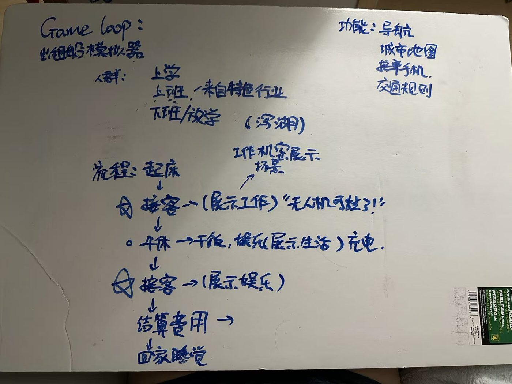
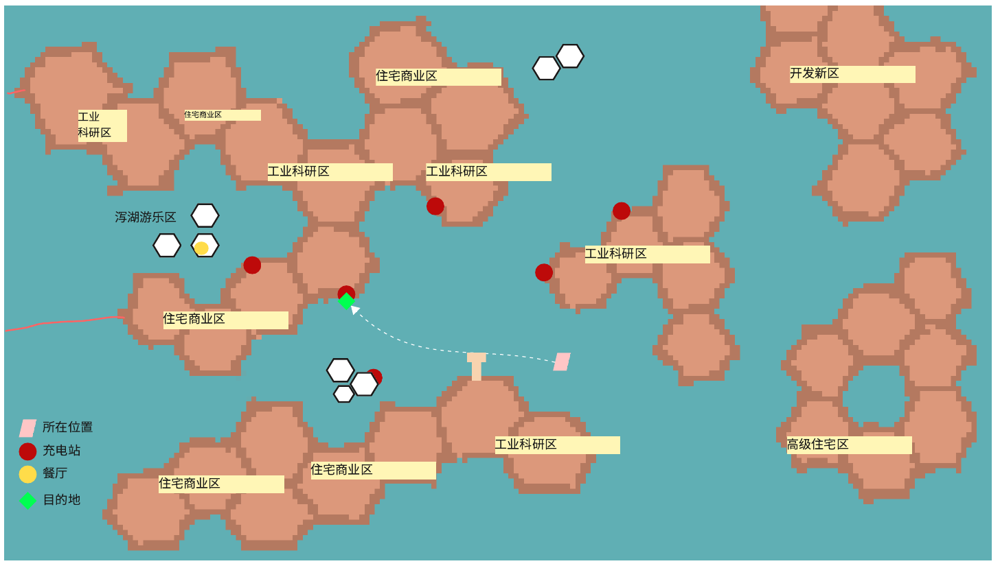
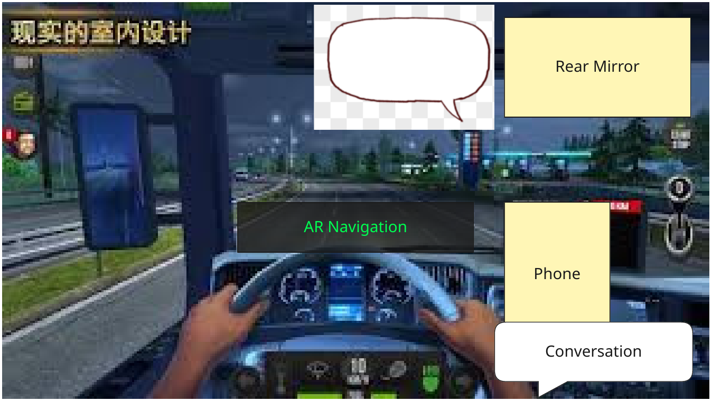
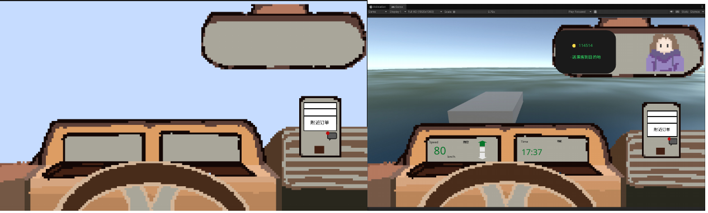
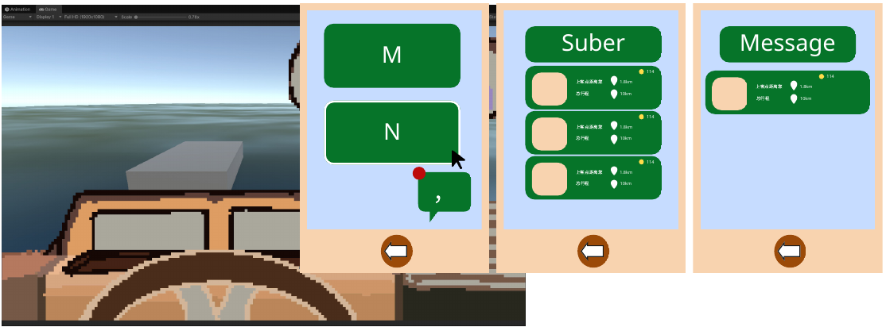

After the direction changed to a "water taxi driver", we started again from daily life in a city at sea and designed the time, passenger, driving and phone systems. This page collects the design from that time.
Target Audience and Transformation
- Target audience: residents of Busan, South Korea, a coastal city that is building a floating city in response to the threat of sea-level rise.
- Transformation: target players go from "knowing little about floating cities and resisting the idea of moving to one" to "being able to concretely understand and imagine daily life in a floating city". Players can make better decisions about their future: move to the sea and start a new life, or stay on land.
| Stage | Player's state |
|---|---|
| Before the game | Knows little about floating cities and resists moving |
| During the game | The game shows the way of life in a floating city |
| After the game | Can imagine what daily life in a floating city is like |
Why a Taxi Driver
We discussed four directions that fit this transformation:
- Ferry simulation: the player follows a timetable with different routines at different times of day, and character dialogue drives the transformation.
- Taxi boat simulation (final choice): basically the same as the ferry simulation, but with money added, so the player has to earn and spend accordingly.
- Coral farming.
- A day in the life of an office worker.
- To achieve the transformation, we needed a perspective that lets players see how life in a floating city differs from life on land. The player needs to travel all over the city and observe its life and scenery, and a taxi driver is a good perspective for that, so the player plays a driver.
- We wanted players not only to observe other people's lives but also to have a life of their own. This extra perspective also adds immersion. So we gave the player a schedule: during working hours, they pick up all kinds of passengers, chat with them and learn about their lives; during lunch breaks and other times, they go about their own routine.
- Passengers represent new jobs in the floating city that don't exist on land, showing players its new possibilities. Each passenger has their own view on moving to a floating city, and through these views players can examine their own opinion more fully and transform. By creating passengers with distinct personalities, we also wanted players to feel that moving to a floating city can mean enjoying a different life, not being forced to flee.
Starting from the Way of Life
We broke "the way of life in a city at sea" into several aspects and wrote down what we wanted players to see in each:
| Aspect | What to show |
|---|---|
| Work | Show and explore the new jobs that appear in a city at sea |
| Food | Show the new foods people living at sea eat every day |
| Housing | Show possible homes and what the communities look like (7 floors or lower) |
| Entertainment | Show and explore new forms of entertainment in a city at sea |
| Disasters | Show that "homes at sea" are a safe place to live even when disasters strike |
| Commuting | Show the different ways players can get around the city: bikes and skateboards on land modules; drones, ferries and catamarans at sea |
Game Loop
A draft game loop for the "taxi boat simulator" from the ideation whiteboard:
A Day
- Get up
- Pick up passengers (shows work)
- Lunch break: lunch, entertainment (shows daily life), recharging
- Pick up passengers (shows entertainment)
- Settle fares
- Go home and sleep
- Passenger groups: students, office workers, people from specific industries; passengers finishing work or school go to the lagoon.
- Features: navigation, city map, an order-taking phone, traffic rules.


Time System: Fixed Schedule or Free Time
We compared two ways to structure a day:
| Option | Content |
|---|---|
| Fixed event schedule | Morning: 2 groups of passengers; lunch break: lunch, recharging the boat, rest; afternoon: 2 groups of passengers; evening: close for the day and settle up |
| Free time system | The player picks up passengers in freely flowing time. When the boat's battery is low, the next destination is automatically set to the nearest charging station, and the boat moves slower when the battery is drained; after finishing the current order at 12:00 each day, the next destination is forced to a lunch place; special passengers appear at fixed times, and their orders can be taken within a certain time window |
My view: in the fixed schedule, recharging would be boring if the player didn't have to do it themselves, and I personally preferred free time. In the end we went with the free time system.
Passenger Design
Passengers are mainly employees of the floating city's signature industries, such as hydroponics, energy companies, coral farming and floating dairy farms, plus other residents such as students, retirees and tourists. Passengers are either recurring or one-time. The characters, themes and locations we listed at the time:
| Content | |
|---|---|
| Characters | Coral, Grandma, Student, a seasick office worker, Chef, Writer, Architect, Protester |
| Themes | Living space, ocean pollution, education (a young person's view, on the funny side), city safety and new jobs (energy recycling), food, an older person's view and new jobs (hydroponics), new jobs (coral care), cost of living, the benefits of a new nationality |
| Other passenger ideas | Someone who loves nature and wants to go to the mountains; the convenience of and rules for fishing boats and fishing; a floating dairy farm (different from land); a socially anxious scientist at a new energy company; a retiree who resists technology; a tourist looking at the sea and seeking new experiences; an international student looking for new photo spots; a game streamer with unstable internet; an artist looking for new experiences and inspiration; an entrepreneur facing an uncertain investment; a doctor who doesn't trust the medical resources |
| Locations | School, the pier back to shore, park, residential area, snack street, street market, amusement park, greenhouse, coral nursery |
To come through in dialogue: living spaces are small, but homes on land weren't big either; medical facilities; nationality: the floating city is under the jurisdiction of its host city, so there's no nationality issue; it is still connected to the original city on land.
Passenger and Dialogue System
Passenger State Machine
- Get in
- Opening dialogue
- Middle dialogue
- Drop-off dialogue
- Get out
- There is only one passenger instance in the scene, and scene and data are kept separate.
- Dialogue data is stored in dictionaries; the passenger dialogue struct contains "paragraphs" and "references".
City and Life Systems
- City map: hexagonal city modules divided into residential-commercial, industrial-research, high-end residential, new development and lagoon entertainment districts; the map marks charging stations, restaurants, destinations and the current position.
- Disaster system: when a disaster comes, the player stays at home. Disaster dates are preset, once a month, with the first typhoon on day 2; an animation shows the protagonist relaxing at home watching TV, where the news is reporting on the disaster.
- Food system: the driver's lunch shows what people eat in the floating city: buying lunch, eating at a fast-food place. The main diet is vegetables plus seafood, emphasizing that it isn't very different from where they lived before.
- Economic system: through the protagonist's everyday spending, players understand how prices differ between land and the floating city: vegetables can be grown locally, so they're cheaper (vegetables are fairly expensive in Korea); animal products aren't produced, so meat and offal are relatively expensive; energy is recycled, so it's relatively cheap. How it shows: at lunch, restaurants and the snack street offer food at different prices, and the same dish costs more with land-grown vegetables than with hydroponic ones; seafood is cheaper overall; fake meat becomes a popular dish; barbecue is only for big celebrations.
- Entertainment: the lagoon center near the land has entertainment facilities, and the player drops passengers off there (showing the amusement park).
- Restaurants: when the driver reaches certain locations, they enter a 2D restaurant scene to order food.


Orders and Navigation
Navigation
- Click a glowing location on the map
- Click "Navigate here" in the pop-up
- Show the route
- Exit the map
The order system covers generating orders at set times, showing the route and removing orders.
Boat Handling Design
First, we researched how motorboats are driven:
- Motorboats are driven by propellers under the hull, with either twin or single engines.
- At sea, a boat moving forward is affected by currents, wind direction and other factors.
- Strictly speaking, a boat can't stop by itself; it only stops moving when the anchor is dropped in place.
- Docking: make fine adjustments by shifting briefly between forward, neutral and reverse instead of steering with the throttle, which easily leads to too much speed; small shifts give precise control. On the final approach, glide slowly, just fast enough to keep control but not so fast you collide; adjust the angle to the situation, and if there's wind at the bow, approach at a sharper angle.
Design principle: simple to control, while keeping the fun of sailing at sea. We proposed three control schemes at the time:
- Right-click throttle; control only the throttle and direction.
- Autopilot; control only the throttle, and avoid other boats on the way.
- Hold forward/back to accelerate and release to keep the current speed; press the anchor key to slow down or stop completely; steering turns slowly at a fixed angular speed and stops turning on release.
In addition, pressing Shift switches to faster acceleration and a higher top speed.
Driving UI and Phone


- Information shown: time (month, day, weekday); balance (0 to 107−1); current task (go to destination, take a photo, go to lunch, go charge); the dashboard navigation shows the distance and direction to the destination.
- Phone: a thumbnail of the phone is visible on the driving screen, showing orders and new messages when no order is active; press M to open the phone. The phone has Suber, a ride-hailing app for boats (view order details and distance), Messages (chats, bill payments and disaster alerts; you can take photos for friends from the chat screen) and Maps (view the map and navigate). Apps open with shortcuts or by clicking their icons; tap the Home button at the bottom of the screen or press Esc to go back; interactive elements show a white border on mouse-over.




Schedule and Other Features
- Schedule system: the player's life starts on January 14, 2030. Each day, work starts at 9:00 and ends at 18:00; 12:00 to 2:00 is lunchtime, when the player can navigate to the nearest restaurant. After 2:00, once the current order ends, navigation automatically goes to the next anchor point.
- Photo system: after picking up special passengers, the player takes photos at the destination. For example, at the start of the story, a friend calls, curious about the floating city you moved to, and asks you to send some photos.
- Skip and autopilot: the player can use a skip feature.
Some of these designs were implemented in the Alpha stage; see the next entry.
Compiled from the team's Miro design board and ideation whiteboards.